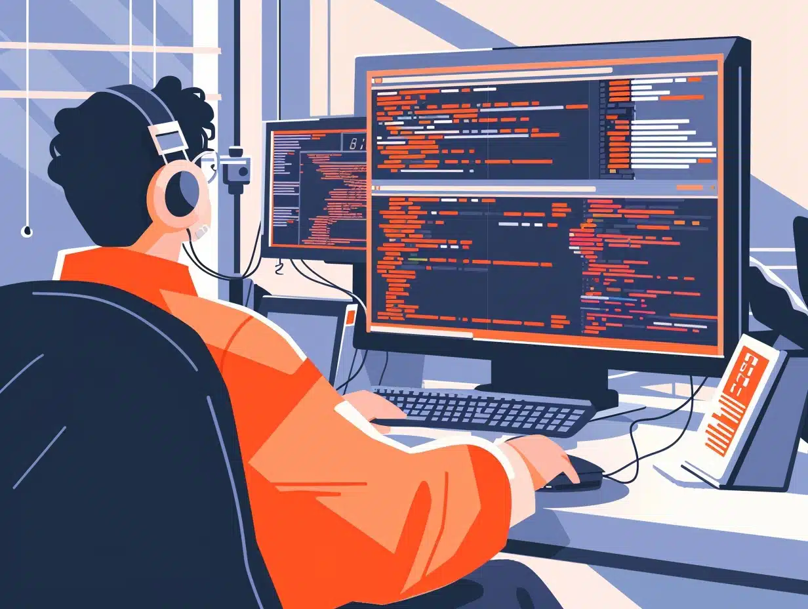
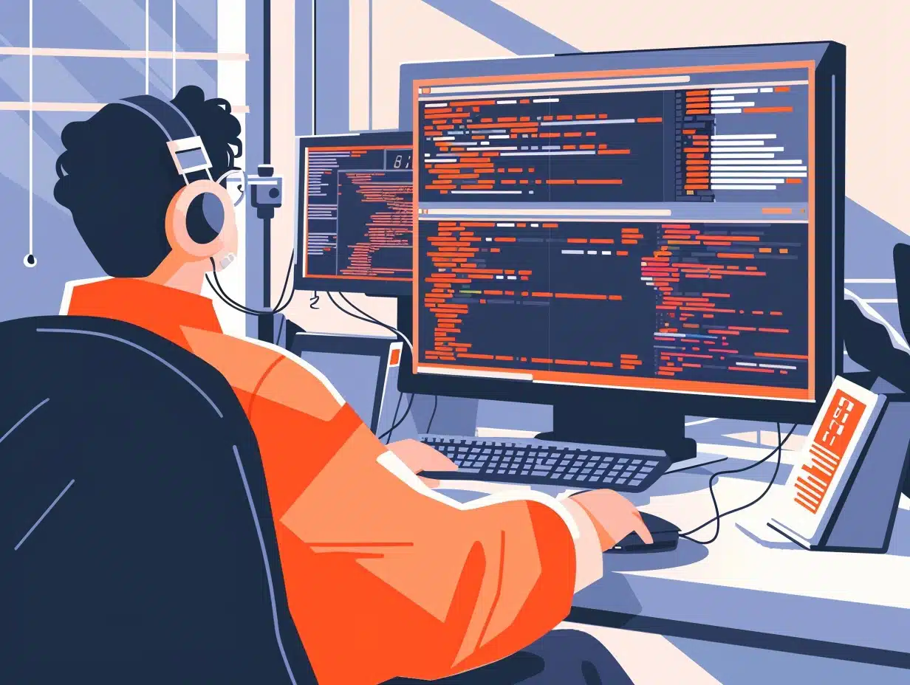

J'ai été boulanger pendant neuf ans, je suis rentré en tant qu'apprentie au sein de l'entreprise Marie Blachère,
à la fin de mon apprentissage on m'a embauché en CDI en tant que boulanger. Après plusieurs années ainsique quelques mutations,
j'ai étais nommé chef production.
 


En 2024 j'ai entrepris une reconversion professionnelle dans les différents métiers de l'informatique. J'ai été motivé par
une reconversion dans le domaine informatique, car comme beaucoup de monde je suis rentré dans ce monde par les jeux vidéos,
et je voulais apprendre dans un domaine totalement différent et comme ce domaine est en constante évolution il y aura toujours
de nouvelles choses à apprendre. Je suis motivé et j'ai soiffe d'apprendre.